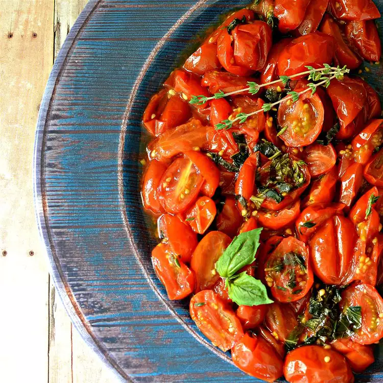

Oven Roasted Grape Tomatoes

A healthy yet delicious summertime side dish!
Ingredients
- 1 pound grape tomatoes, halved
- 1 tablespoon olive oil
- 2 cloves garlic, minced
- 5 fresh basil leaves, chopped
- 1 teaspoon chopped fresh thyme
- salt to taste
Steps
- Preheat oven to 350 degrees F (175 degrees C).
- Place tomatoes onto a large square of aluminum foil. Drizzle olive oil over tomatoes and top with garlic, basil, thyme, and salt. Wrap the foil around tomato mixture sealing tightly to keep juices inside.
- Bake in the preheated oven until tomatoes are tender, about 30 minutes. Cool slightly.